M1708 · Sostenibilitat aplicada al sistema productiu
M1708 · Sostenibilitat
RA1 · ASG i desenvolupament sostenible
Identifica els aspectes ambientals, socials i de governança (ASG) relatius a la sostenibilitat tenint en compte el concepte de desenvolupament sostenible i els marcs internacionals que contribueixen a la seva consecució.
Aquest tema explica què és la sostenibilitat, quins acords la impulsen i com s’avalua una empresa amb els criteris ambientals, socials i de governança (ASG). Tot amb exemples del sector informàtic.
El desenvolupament sostenible vol millorar el benestar d'avui sense posar en perill el de demà. L'Informe Brundtland (ONU, 1987) el defineix com el que satisfà les necessitats del present sense comprometre la capacitat de les generacions futures de satisfer les seves.
Aquesta definició té dues idees clau. La primera són les necessitats: menjar, aigua, habitatge, salut, educació i feina per a tothom, començant per qui menys té. La segona són els límits: el planeta té recursos finits i una capacitat limitada d'absorbir contaminació. Per tant, la sostenibilitat no és només «cuidar el medi ambient», sinó trobar l'equilibri entre benestar de les persones, economia i natura.
Exemple: si una empresa renova tots els portàtils cada dos anys perquè surt barat, cobreix una necessitat d'avui, però genera residus i esgota minerals que les generacions futures no tindran. Allargar-ne la vida a cinc anys és una decisió més sostenible.
1.1 Les tres dimensions i els criteris ASG
Dimensió
Què busca
Ambiental
Usar els recursos al ritme que la natura els regenera i no superar la seva capacitat d'absorbir residus
Social
Equitat, benestar, drets i inclusió per a totes les persones
Econòmica
Riquesa i ocupació viables a llarg termini i repartides de manera justa
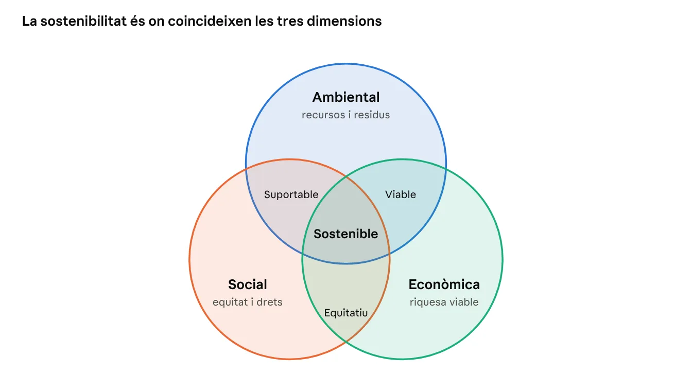
les tres dimensions del desenvolupament sostenible
Si en falla una, no hi ha sostenibilitat: un projecte rendible que contamina no és suportable, i un de verd que no és rendible no és viable.
No ho confonguis. Les dimensions del desenvolupament sostenible són ambiental, social i econòmica i parlen de la societat. Els criteris ASG són ambiental, social i governança i serveixen per avaluar una empresa concreta. Van néixer el 2004 amb l'informe Who Cares Wins del Pacte Mundial.
1.2 Evolució històrica
La visió ha passat de protegir el medi ambient a integrar-hi també l'equitat social, l'economia i, a les empreses, la governança. La línia del temps de sota resumeix les fites clau.
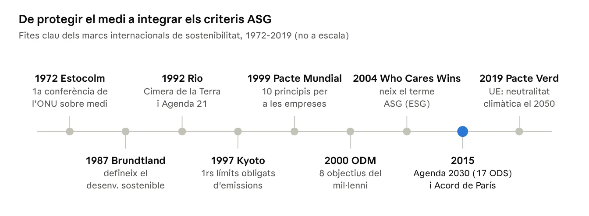
línia del temps · 9 fites, 1972-2019
El 2015 és l'any clau: l'Agenda 2030 i l'Acord de París fixen el full de ruta global que encara seguim avui.
Què va aportar cada fita:
Estocolm (1972): primera conferència de l'ONU dedicada al medi ambient. Va posar el tema a l'agenda internacional i va crear el Programa de Nacions Unides per al Medi Ambient (PNUMA).
Informe Brundtland (1987): va definir el desenvolupament sostenible i va unir medi ambient i desenvolupament en un sol concepte.
Cimera de Rio (1992): va aprovar l'Agenda 21 (un pla d'acció per al segle XXI) i els convenis sobre canvi climàtic i biodiversitat.
Protocol de Kyoto (1997): primer acord que obligava els països industrialitzats a reduir les seves emissions de GEH.
Pacte Mundial (1999): va portar la sostenibilitat a les empreses (vegeu l'apartat 1.3).
Objectius de Desenvolupament del Mil·lenni (2000): 8 objectius per reduir la pobresa extrema abans del 2015, pensats sobretot per als països en desenvolupament.
Who Cares Wins (2004): informe del Pacte Mundial amb entitats financeres on apareix per primer cop el terme ASG.
Agenda 2030 i Acord de París (2015): substitueixen els ODM i Kyoto amb objectius per a tots els països (apartats 1.4 i 3).
Pacte Verd Europeu (2019): l'estratègia de la UE per ser el primer continent climaticament neutre (apartat 1.5).
1.3 El Pacte Mundial de l'ONU
És una iniciativa voluntària presentada per Kofi Annan a Davos el 1999. Les empreses adherides es comprometen amb 10 principis i informen cada any dels seus avenços.
El Pacte Mundial no és vinculant: no hi ha sancions si una empresa no compleix. El seu valor és que dona un marc comú i obliga a ser transparent, perquè cada any l'empresa ha de publicar una Comunicació de Progrés explicant què ha fet. És la iniciativa de sostenibilitat empresarial més gran del món, i moltes empreses espanyoles en formen part.
Àmbit
Principis
Compromís
Drets humans
1-2
Respectar-los i no ser-ne còmplice
Normes laborals
3-6
Llibertat sindical, fi del treball forçós i infantil, no discriminació
Medi ambient
7-9
Prevenció, responsabilitat ambiental i tecnologies netes
Anticorrupció
10
Contra l'extorsió i el suborn
1.4 L'Acord de París (COP21, 2015)
És un tractat vinculant sobre canvi climàtic, en vigor des del 4 de novembre de 2016.
Objectiu: mantenir l'escalfament ben per sota dels 2 °C i fer esforços per limitar-lo a 1,5 °C.
NDC: cada país presenta els seus compromisos i els revisa cada 5 anys, cada cop més ambiciosos.
Finançament climàtic: els països rics ajuden els més vulnerables.
Els EUA en van sortir de manera efectiva el gener del 2026.
Per què 1,5 °C? Segons l'IPCC, cada dècima de grau compta. Amb 2 °C hi hauria moltes més onades de calor, sequeres i pèrdua d'esculls de corall que amb 1,5 °C. Per no passar d'1,5 °C, les emissions mundials s'haurien de reduir a la meitat cap al 2030 i arribar a zero emissions netes cap al 2050.
Cada any els països es reuneixen a la COP (Conferència de les Parts) per revisar els avanços i negociar nous compromisos.
1.5 Marc europeu, espanyol i català
Àmbit
Norma o pla
Què estableix
UE
Pacte Verd Europeu (2019)
Transformar l'economia: energia, indústria, mobilitat, economia circular
UE
Llei europea del clima
-55 % d'emissions el 2030, -90 % el 2040 (aprovat el 2026) i neutralitat el 2050
UE
Taxonomia UE
Classifica quines activitats econòmiques són «verdes»
Espanya
Llei 7/2021 de canvi climàtic i transició energètica
Neutralitat abans del 2050; zones de baixes emissions a ciutats de més de 50.000 habitants
Espanya
PNIEC i Estratègia de transició justa
Pla d'energia i clima; que ningú quedi enrere en el canvi
Espanya
Llei 11/2018 (EINF)
Estat d'informació no financera de les grans empreses
Catalunya
Llei 16/2017 del canvi climàtic
Marc català de lluita contra el canvi climàtic
Les normes funcionen en cascada. La UE fixa els objectius i aprova directives, Espanya les incorpora a les seves lleis i Catalunya les concreta amb normes pròpies. Per a una empresa informàtica, això vol dir, per exemple, que una gran consultora ha de publicar el seu estat d'informació no financera (EINF) i calcular les seves emissions.
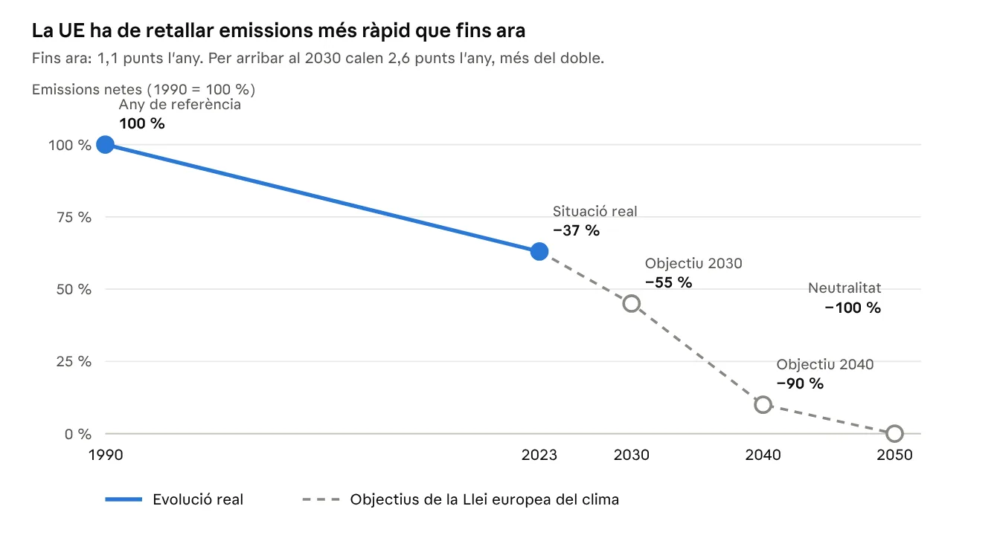
Fonts: Agència Europea de Medi Ambient (2023) i Llei europea del clima
La línia del temps continua cap al futur: el 2023 la UE ja havia reduït les seves emissions un 37 % respecte del 1990, però per complir els objectius haurà d'anar molt més de pressa.
Criteri 1.a · 1.3
02 · Reptes globals: clima, ecosistemes i equitat
L'ús irracional dels recursos naturals ens ha portat a una emergència ambiental: un deteriorament greu del medi que posa en perill els ecosistemes i pràcticament totes les espècies, inclosa la humana. L'originen dues crisis: la crisi climàtica i la crisi de la biodiversitat.
2.1 Canvi climàtic
L'escalfament global és l'augment de la temperatura mitjana del planeta. Des del segle XIX la causa principal són els gasos d'efecte hivernacle (GEH) que emet l'activitat humana. L'IPCC de l'ONU n'avalua la ciència.
Com funciona l'efecte hivernacle? El Sol escalfa la Terra i la Terra torna part d'aquesta calor cap a l'espai. Alguns gasos de l'atmosfera (CO₂, metrà, òxid nitrós, vapor d'aigua) retenen una part de la calor, com el vidre d'un hivernacle. Aquest efecte és natural i necessari: sense ell, la temperatura mitjana seria d'uns -18 °C. El problema és que, en cremar carbó, petroli i gas, n'hem augmentat molt la concentració i ara es reté més calor de la que toca.
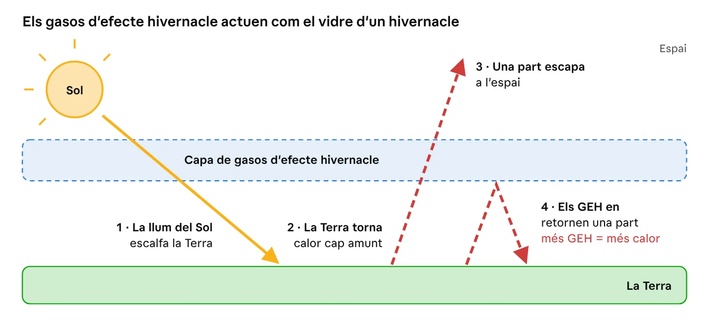
efecte hivernacle · esquema en 4 passos
El resultat és que el planeta ja és més d'1 °C més calent que abans de la revolució industrial, i el 2024 va ser el primer any que va superar 1,5 °C de mitjana (OMM). A Catalunya ho hem viscut amb la sequera del 2021-2024, quan els embassaments van arribar a mínims històrics.
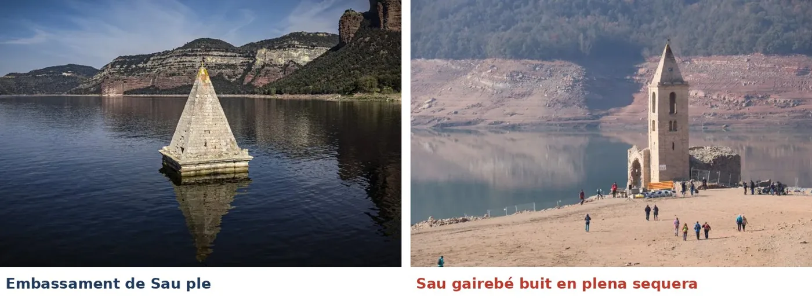
L'embassament de Sau (Osona): a l'esquerra, ple, amb només la punta del campanar de Sant Romà fora de l'aigua; a la dreta, durant la sequera, amb l'església i el poble antic al descobert.
Causes
Efectes
Crema de combustibles fòssils (electricitat, indústria, transport)
Augment de les temperatures
Desforestació
Fenòmens extrems: onades de calor, DANA, sequeres
Producció intensiva d'aliments
Pujada del nivell del mar
Consum excessiu de béns
Pèrdua de biodiversitat
2.2 Ecosistemes i biodiversitat
La biodiversitat és la varietat d'éssers vius i d'ecosistemes. Els ecosistemes ens donen aliments, aigua neta, regulació del clima i medicaments.
Pol·linitzadors: les abelles i altres insectes permeten la reproducció de moltes plantes i la producció de fruits i llavors.
Desforestació: queden menys boscos per absorbir CO₂ i es perden hàbitats.
Principals amenaces: pèrdua d'hàbitats, contaminació, canvi climàtic i sobreexplotació.
Els ecosistemes funcionen com una xarxa: si en desapareix una peça, en pateixen les altres. Per exemple, si minven les abelles, hi ha menys fruita i verdura, i els aliments s'encareixen. Per això la pèrdua de biodiversitat no és només un problema ambiental, sinó també econòmic i social.
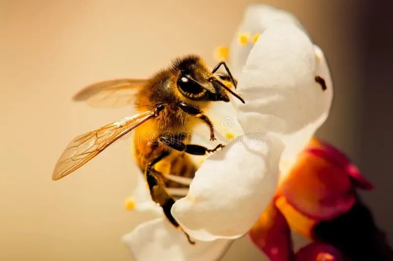
Una abella pol·linitzant una flor de fruiter. Sense pol·linitzadors, molts conreus no donarien fruit.
2.3 Emergència social
L'esgotament de recursos bàsics (aigua, aliments, terra fèrtil) agreuja la pobresa, provoca desplaçaments i genera conflictes. Els països i les persones amb menys recursos són els que menys es poden adaptar.
Més de 800 milions de persones viuen en pobresa extrema (Banc Mundial).
Més de 100 milions de persones han hagut de deixar casa seva per la força (ACNUR).
Desigualtat social: oportunitats molt diferents d'accés a l'educació, la salut o la feina segons els recursos de cada persona. Al sector TIC es veu en la bretxa de gènere i el «sostre de vidre».
La crisi ambiental i la social estan connectades. Una sequera o una inundació afecta molt més qui viu en un habitatge precàri o depèn de l'agricultura que qui té recursos per adaptar-se. Per això es parla de justa transició: canviar cap a una economia verda sense deixar enrere els treballadors i les zones més afectats. En el món digital, la desigualtat es veu en la bretxa digital: no tothom té dispositius, connexió o competències digitals.
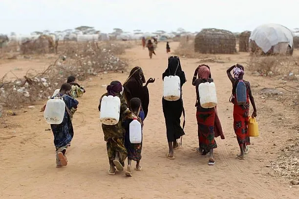
Dones i nenes carregant aigua en un camp de refugiats. La sequera i la falta d'aigua obliguen milions de persones a desplaçar-se.
2.4 Petjada ecològica i biocapacitat
Concepte
Què mesura
Petjada ecològica
Superfície de terra i mar biològicament productiva que cal per obtenir els recursos que consumim i absorbir els residus que generem. Es mesura en hectàrees globals (hag).
Biocapacitat
Capacitat dels ecosistemes d'un territori per regenerar recursos i absorbir residus.
Com es calcula la petjada ecològica? Es parteix de tot el que consumeix una persona o un país (aliments, energia, fusta, peix, habitatge...) i es converteix en la superfície que caldria per produir-ho. Inclou sis tipus de terreny: conreus, pastures, boscos, zones de pesca, sòl urbanitzat i el bosc que caldria per absorbir el CO₂ que emetem. Aquest últim component és el més gran als països rics.
Després es compara amb la biocapacitat del territori.
Si la petjada supera la biocapacitat hi ha dèficit ecològic: consumim més del que el territori pot regenerar. Passa als països més desenvolupats, com Espanya. El Dia de la Sobrecapacitat de la Terra marca la data en què la humanitat ja ha gastat el que el planeta pot regenerar en un any.
Segons la Global Footprint Network, la humanitat consumeix ara com si tinguéssim uns 1,7 planetes. Si tothom visqués com la mitjana espanyola, en necessitaríem més de dos.
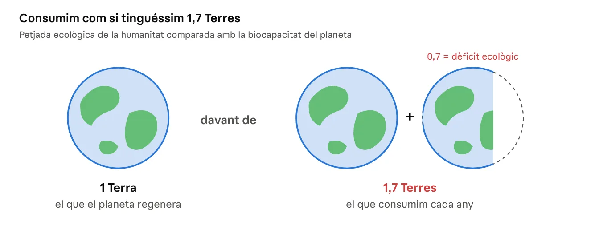
Font: Global Footprint Network
2.5 I la informàtica?
Els centres de dades consumeixen prop de l'1,5 % de l'electricitat mundial (AIE, 2024). El 2022 es van generar 62 milions de tones de residus electrònics i només un 22 % es van reciclar correctament (Global E-waste Monitor 2024).
La informàtica sembla «immaterial», però té un impacte físic en tres moments:
Fabricació: extreure minerals (coure, liti, cobalt, terres rares) i fabricar xips consumeix molta energia i aigua. En un mòbil o un portàtil, la major part de les emissions de tota la seva vida es generen aquí.
Ús: cada cerca, vídeo o consulta a una IA passa per centres de dades que consumeixen electricitat per funcionar i per refrigerar els servidors.
Fi de vida: els equips que es llencen sense reciclar alliberen substàncies tòxiques i perdem materials valuosos.
Per això l'acció més eficac sol ser allargar la vida dels equips.
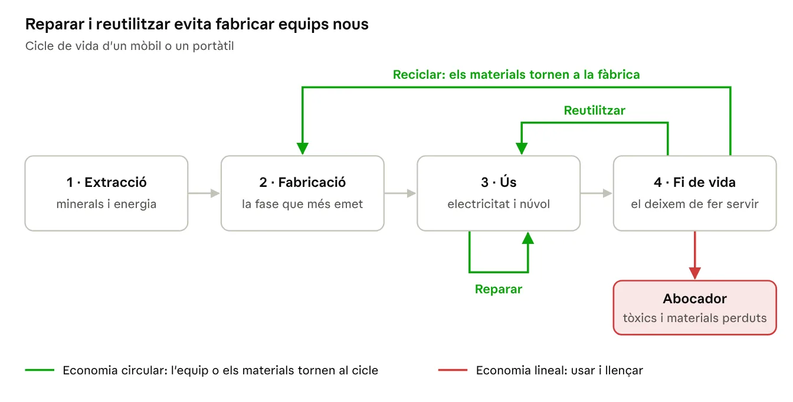
cicle de vida d'un equip · economia lineal i circular
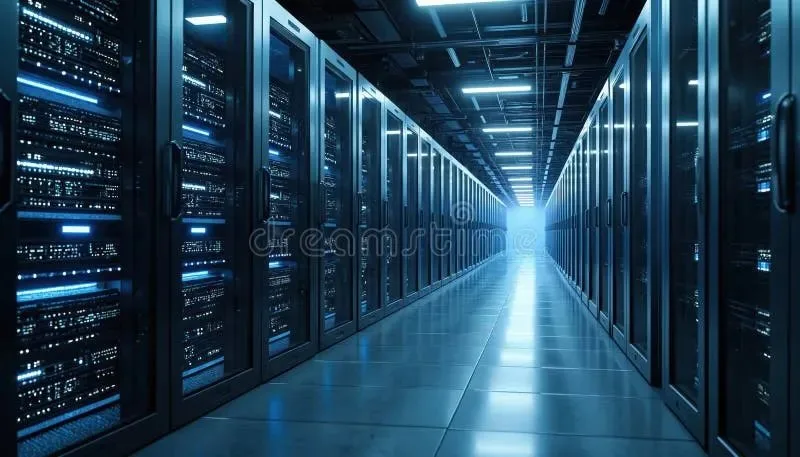
Un centre de dades: milers de servidors funcionant dia i nit, que cal alimentar i refrigerar.
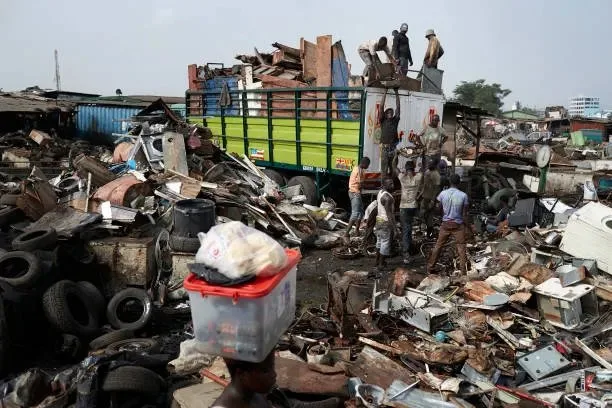
Abocador de residus a l'Àfrica occidental (com el d'Agbogbloshie, a Ghana), on arriben equips electrònics descartats des d'Europa i on es desmunten sense protecció.
Green IT: centres de dades eficients, virtualització i energia renovable.
Green coding: codi i algorismes que consumeixen menys CPU i transfereixen menys dades.
Vida útil: reparar, actualitzar i reciclar els equips (RAEE).
Criteri 1.c · 1.4
03 · L'Agenda 2030 i els ODS
L'Agenda 2030 és el pla d'acció universal de l'ONU per a la sostenibilitat: aprovada el setembre del 2015 per 193 països, té 17 Objectius de Desenvolupament Sostenible (ODS) i 169 metes.
Universal: afecta tots els països, no només els menys desenvolupats (els antics ODM sí que ho feien).
Integrada: els objectius estan connectats; avançar en un ajuda els altres.
Per a tothom: governs, empreses i ciutadania. El lema és «no deixar ningú enrere».
ODM i ODS no són el mateix. Els Objectius del Mil·lenni (2000-2015) eren 8, se centraven en la pobresa i es dirigien sobretot als països en desenvolupament, amb els rics com a donants. Els ODS són 17, inclouen el medi ambient i la governança, i comprometen tots els països, també Espanya, i tots els actors.
Cada objectiu es divideix en metes concretes (169 en total) i cada meta es mesura amb indicadors (més de 200). Per exemple, l'ODS 12 inclou la meta de reduir considerablement la generació de residus mitjançant la prevenció, la reducció, el reciclatge i la reutilització. Els països informen dels seus avanços a l'ONU, i les empreses poden explicar en els seus informes a quins ODS contribueixen.
3.1 Les 5P
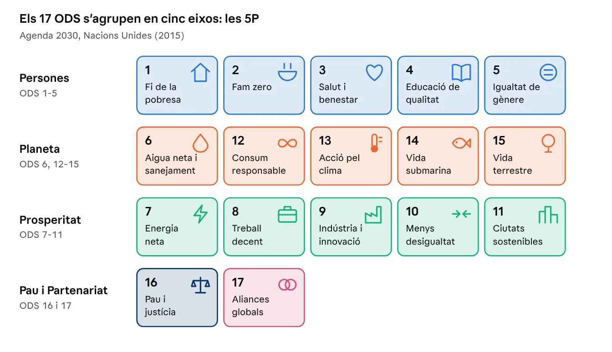
els 17 ODS agrupats en les 5P
Persones i Planeta són la base; Prosperitat i Pau en depenen, i el Partenariat (ODS 17) és l'eina per aconseguir-ho tot.
3.2 Els 17 ODS
ODS
Nom
Què demana
1
Fi de la pobresa
Erradicar la pobresa i garantir protecció social
2
Fam zero
Acabar amb la fam; agricultura sostenible
3
Salut i benestar
Vida sana a totes les edats
4
Educació de qualitat
Educació inclusiva i aprenentatge al llarg de la vida
5
Igualtat de gènere
Igualtat real i apoderament de dones i nenes
6
Aigua neta i sanejament
Accés i gestió sostenible de l'aigua
7
Energia neta i assequible
Energia assequible, segura i renovable
8
Treball decent i creixement
Ocupació plena i treball digne
9
Indústria, innovació i infraestructura
Infraestructures resilients i innovació
10
Reducció de les desigualtats
Menys desigualtat dins i entre països
11
Ciutats i comunitats sostenibles
Ciutats inclusives, segures, amb transport públic
12
Producció i consum responsables
Menys residus i malbaratament; economia circular
13
Acció pel clima
Mesures urgents contra el canvi climàtic
14
Vida submarina
Conservar els oceans
15
Vida d'ecosistemes terrestres
Boscos, desertificació i biodiversitat
16
Pau, justícia i institucions sòlides
Accés a la justícia i institucions transparents
17
Aliances per assolir els objectius
Cooperació, tecnologia i finançament
3.3 ODS clau per al sector informàtic
ODS
Com hi contribueix una empresa TIC
5
Més dones en equips tècnics i en direcció; selecció sense biaixos
9
Infraestructures digitals resilients i connectivitat
10
Accessibilitat web (WCAG) i reducció de la bretxa digital
12
Allargar la vida dels equips i reciclar els RAEE
13
Green coding, hosting verd i centres de dades eficients
16
Ciberseguretat, protecció de dades (RGPD) i transparència
Una empresa no ha de treballar els 17 ODS alhora. El més raonable és triar els que estan més relacionats amb la seva activitat, on pot tenir més impacte (positiu o negatiu), i fixar-se objectius mesurables.
Criteri 1.b · 1.5
04 · Els criteris ASG a l'empresa
Els criteris ASG (en anglès ESG) avaluen l'impacte i la gestió d'una empresa més enllà dels resultats financers. Afecten el seu valor, els inversors, la clientela i la reputació.
Abans, una empresa es valorava gairebé només pels beneficis. Avui els inversors, la clientela i l'administració també volen saber com obté aquests beneficis: si contamina, com tracta la plantilla o si és transparent. Els criteris ASG són la manera ordenada de respondre aquestes preguntes.
Criteri
Què mira
Exemples generals
Al sector informàtic
A · Ambiental
Com afecta l'activitat el planeta: emissions, energia, recursos, residus, biodiversitat
Electricitat verda, classificació de residus, menys desplaçaments
Hosting renovable, green coding, allargar la vida dels equips i gestionar els RAEE
S · Social
Com tracta les persones: drets laborals, igualtat, diversitat, salut, comunitat
Conciliació, igualtat de gènere, formació, projectes locals
Accessibilitat (WCAG), equips diversos, teletreball i desconnexió digital
G · Governança
Com es dirigeix i controla: ètica, transparència, anticorrupció
Codi ètic, canal de denúncies, consell divers, informes transparents
Compliment del RGPD, ciberseguretat, llicències del codi, auditoria d'algorismes i IA
Ambiental (A): mira l'empremta de l'empresa sobre la natura. Inclou quanta energia gasta i d'on ve, quines emissions genera, quants residus produeix i com els gestiona.
Social (S): mira les persones de dins i de fora de l'empresa. Inclou els salaris i les condicions de feina, la igualtat entre homes i dones, la seguretat, el respecte als drets humans a la cadena de proveïdors i la relació amb la clientela i el barri.
Governança (G): mira com es prenen les decisions i qui les controla. Inclou la composició del consell d'administració, la transparència dels comptes, les polítiques contra la corrupció i el compliment de la llei.
Truc per classificar: si afecta el planeta, és A; si afecta les persones, és S; si afecta com es prenen i es controlen les decisions, és G. Exemple: una empresa de programari amb servidors eficients (A), una app accessible (S) i un canal anticorrupció (G).
4.1 Per què aplicar polítiques ASG?
Finançament: préstecs i bons verds en millors condicions.
Menys costos: estalvi d'energia, residus i matèries primeres.
Compliment legal: preparada per a la CSRD, l'EINF i noves normes.
Talent: millor clima laboral i atracció de professionals.
Reputació: la clientela confia més en empreses responsables.
Gestió del risc: anticipa riscos climàtics, legals i de reputació.
Exemple proper: una gasolinera de l'Hospitalet de Llobregat va instal·lar a la teulada una planta fotovoltaica de 163,5 kWp. Segons el projecte, això li permet estalviar un 44 % del cost d'energia. És un exemple de criteri ambiental que també millora la rendibilitat de l'empresa.
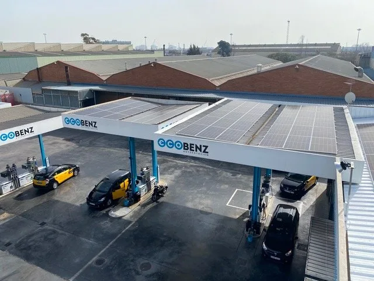
La gasolinera de l'Hospitalet amb les plaques solars a la marquesina i a la teulada.
Criteri 1.d · 1.5
05 · Grups d'interès, riscos i oportunitats
Els grups d'interès (stakeholders) són les persones i organitzacions que es veuen afectades per l'activitat de l'empresa o que hi poden influir. Cada grup valora aspectes ASG diferents.
Es poden classificar en interns (persones treballadores, direcció, accionistes) i externs (clientela, proveïdors, administració, comunitat local, ONG, mitjans). Una empresa sostenible els identifica, els escolta i té en compte les seves expectatives quan pren decisions.
Grup d'interès
Què li importa
Exemple en una empresa TIC
Persones treballadores
Condicions laborals, salut, igualtat, formació
Teletreball, desconnexió digital, pla d'igualtat
Clientela i usuaris
Qualitat, seguretat, privacitat, accessibilitat
Protecció de dades (RGPD), apps accessibles
Accionistes i inversors
Rendibilitat a llarg termini i gestió del risc
Informe de sostenibilitat, rating ASG
Proveïdors
Relació justa i estable, pagament a temps
Compra de maquinari amb criteris ètics i ambientals
Administració pública
Compliment legal i fiscal
CSRD, EINF, Llei 7/2021
Comunitat local i ONG
Ocupació, impacte ambiental, col·laboració
Formació digital al barri, reciclatge d'equips
Mitjans de comunicació
Transparència i coherència
Evitar el greenwashing
5.1 Com prioritzar: la matriu poder-interès
No tots els grups pesen igual. La matriu de sota els situa segons el poder que tenen sobre l'empresa i l'interès que tenen en la seva activitat, i indica com gestionar-los.
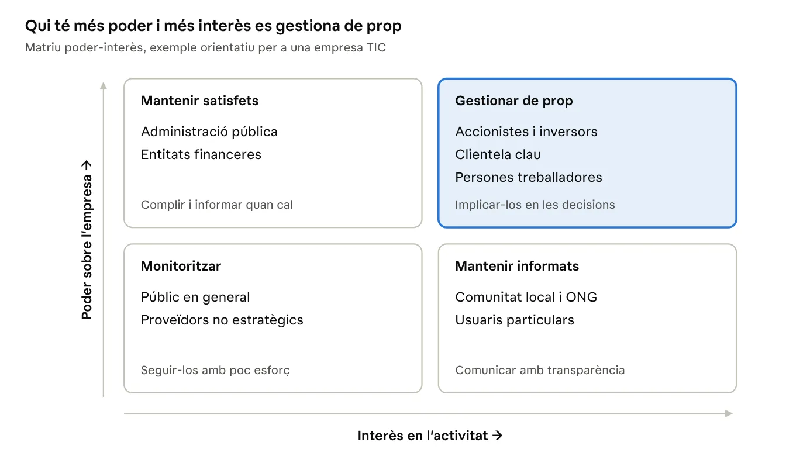
matriu poder-interès · 4 quadrants
La posició de cada grup depèn de l'empresa: en una startup, per exemple, els inversors i la plantilla pesen molt més que en una gran multinacional.
5.2 Riscos i oportunitats ASG
Criteri
Risc si no es gestiona
Oportunitat si es gestiona
A
Multes, pujada del preu de l'energia, danys climàtics a les instal·lacions
Estalvi energètic, nous productes verds, finançament verd
S
Fuga de talent, conflictes laborals, boicot de la clientela
Talent compromès, fidelitat de la clientela, millor clima laboral
G
Sancions per RGPD, corrupció, pèrdua de confiança dels inversors
Més confiança, accés a fons ISR, millor valoració
Un mateix tema pot ser risc o oportunitat segons com es gestioni. Per exemple, la pujada del preu de l'electricitat és un risc per a una empresa amb un centre de dades ineficient, però és una oportunitat per a una que ha instal·lat plaques solars i reduït el consum.
5.3 La doble materialitat
Un tema és material quan és rellevant per a l'empresa i els seus grups d'interès. La normativa europea (CSRD) demana analitzar-lo en dues direccions:
Materialitat d'impacte (de dins cap a fora): com afecta l'empresa les persones i el planeta. Exemple: les emissions dels seus servidors.
Materialitat financera (de fora cap a dins): com afecten els temes ASG els resultats de l'empresa. Exemple: el cost de l'electricitat o una sanció.
Com es fa una anàlisi de materialitat?
Fer una llista dels temes ASG que poden afectar l'empresa (energia, residus, privacitat, igualtat...).
Preguntar als grups d'interès quins consideren més importants, amb enquestes, entrevistes o reunions.
Valorar cada tema segons el seu impacte i la seva importància per a l'empresa.
Representar-los en una matriu de materialitat i prioritzar els que surten més amunt.
Fer servir aquests temes per decidir l'estratègia i què explicar a l'informe de sostenibilitat.
Compte amb el greenwashing. És presentar l'empresa com més sostenible del que és, amb missatges vagues o enganyosos. La UE l'està limitant amb la directiva d'apoderament dels consumidors per a la transició verda.
Criteri 1.e · 1.2
06 · Mètriques i rendició de comptes
El que no es mesura no es pot millorar. Les empreses fan servir indicadors (KPI) i estàndards comuns per informar del seu impacte de manera comparable i verificable. Aquesta rendició de comptes es diu reporting de sostenibilitat.
6.1 Estàndards i normes d'informació
Estàndard o norma
Qui l'impulsa
Per a què serveix
GRI
Global Reporting Initiative
L'estàndard voluntari més usat del món per informar d'impactes ASG
ESRS
UE (EFRAG)
Estàndards obligatoris de la CSRD
NIIF S1 i S2 (ISSB)
Fundació IFRS
Informació de sostenibilitat orientada als inversors; S2 sobre clima
CSRD
Unió Europea
Obliga a publicar un informe de sostenibilitat. Després de l'Òmnibus I (2026), només empreses de més de 1.000 treballadors i més de 450 M€ de facturació
EINF · Llei 11/2018
Espanya
Estat d'informació no financera de grans empreses i entitats d'interès públic
ISO 14001 · EMAS
ISO · UE
Sistemes de gestió ambiental certificables
ISO 26000
ISO
Guia de responsabilitat social (no certificable)
El procés de rendició de comptes té tres passos: l'empresa recull dades (consums, emissions, plantilla, incidents), les presenta seguint un estàndard com GRI o ESRS, i un verificador extern (una auditora independent) comprova que són certes. Fer servir un estàndard comú permet comparar empreses entre elles i veure l'evolució d'un any a l'altre. Sense estàndard, cada empresa explicaria només el que li convé.
6.2 La petjada de carboni
Mesura les emissions de GEH d'una organització o producte en tones de CO₂ equivalent (t CO₂e). El GHG Protocol les divideix en tres abasts:
El CO₂ equivalent permet sumar gasos diferents: cada gas es multiplica pel seu poder d'escalfament comparat amb el CO₂. Per exemple, una tona de metrà escalfa unes 28 vegades més que una de CO₂ en cent anys.
Com es calcula? Per a cada activitat es multipliquen les dades d'activitat per un factor d'emissió:
Exemple: una oficina consumeix 10.000 kWh d'electricitat l'any. Si el factor d'emissió de la seva comercialitzadora és 0,25 kg CO₂e/kWh, les emissions d'abast 2 són 10.000 × 0,25 = 2.500 kg, és a dir, 2,5 t CO₂e. Si contracta electricitat 100 % renovable amb garantia d'origen, aquest factor baixa gairebé a zero.
Els factors d'emissió els publiquen organismes oficials com el Ministeri per a la Transició Ecològica o l'Oficina Catalana del Canvi Climàtic.
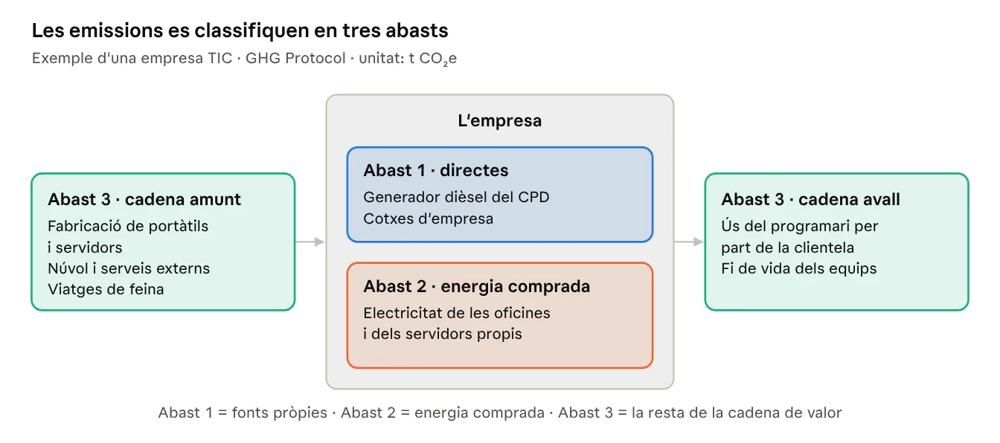
petjada de carboni · abasts 1, 2 i 3
A les empreses tecnològiques, l'abast 3 sol ser la part més gran de la petjada.
6.3 Indicadors útils al sector TIC
PUE (Power Usage Effectiveness): energia total del centre de dades dividida per l'energia dels equips informàtics. Com més a prop d'1, més eficient.
Percentatge d'electricitat renovable consumida.
Quilos de RAEE recollits i percentatge reciclat o reutilitzat.
Bretxa salarial i percentatge de dones en llocs tècnics i directius.
Hores de formació per persona i incidents de ciberseguretat.
PUE = Energia total del centre de dades ÷ Energia dels equips TI
Exemple: un centre de dades consumeix 1.500 kWh en total, dels quals 1.000 kWh van als servidors. El PUE és 1.500 / 1.000 = 1,5. Vol dir que, per cada kWh que fan servir els equips, se'n gasta mig més en refrigeració, il·luminació i pèrdues. El valor ideal seria 1,0.
6.4 Índexs de països
El PIB mesura quanta riquesa produeix un país, però no diu si la gent viu bé, si la riquesa està ben repartida ni si s'està destruint la natura per obtenir-la. Una tala massiva de boscos, per exemple, fa pujar el PIB. Per això es van crear índexs que miren més enllà del PIB. Serveixen per comparar països, veure si milloren amb el temps i orientar les polítiques públiques.
Índex de Desenvolupament Humà (IDH). El calcula el Programa de les Nacions Unides per al Desenvolupament (PNUD) cada any. Mesura tres dimensions:
Dimensió
Indicador
Vida llarga i saludable
Esperança de vida en néixer
Educació
Anys d'escolarització dels adults i anys esperats dels infants
Nivell de vida digne
Renda nacional per càpita (ajustada al cost de la vida)
Cada dimensió es converteix en un valor entre 0 i 1, i l'IDH és la mitjana (geomètrica) de les tres. El resultat va de 0 a 1: per sobre de 0,8 es considera desenvolupament molt alt, com el d'Espanya.
IDH ajustat per la desigualtat (IDHD). Parteix de l'IDH i el rebaixa segons com de desigual és el repartiment de salut, educació i ingressos dins el país. Si tothom tingués el mateix, IDH i IDHD coincidirien. La diferència entre tots dos és la pèrdua per desigualtat: com més gran, més desigual és el país.
Índex de Rendiment Ambiental (EPI). L'elaboren les universitats de Yale i Columbia. Puntua els països de 0 a 100 a partir de desenes d'indicadors agrupats en tres blocs: canvi climàtic, salut ambiental (qualitat de l'aire i l'aigua, residus) i vitalitat dels ecosistemes (biodiversitat, boscos, pesca).
Índex de Progrés Real (IPR o GPI). Vol substituir el PIB. Parteix del consum de les llars i fa dos ajustos: hi suma activitats valuoses que el PIB no compta, com el treball domèstic i el voluntariat, i hi resta els costos que el PIB ignora, com la contaminació, l'esgotament de recursos, la delinqüència o la desigualtat. Es dona en unitats monetàries (euros o dòlars).
Índex
Què respon
Escala
IDH
Com viu la gent: salut, educació i ingressos
0 a 1
IDHD
I si tenim en compte la desigualtat?
0 a 1
EPI
Com cuida el país el seu medi ambient?
0 a 100
IPR / GPI
Quin progrés real hi ha, descomptant costos socials i ambientals?
Euros o dòlars
Criteri 1.f · 1.5
07 · Inversió socialment responsable (ISR)
La ISR és la inversió que, a més de la rendibilitat i el risc, té en compte criteris ASG per decidir on es posen els diners. Els Principis d'Inversió Responsable de l'ONU (PRI, 2006) en són el marc de referència.
Per què interessa als inversors? Perquè una empresa que gestiona malament els riscos ASG pot perdre diners en el futur: multes, boicots, vagues o actius que deixen de valer (per exemple, una central de carbó). La ISR no vol dir renunciar a la rendibilitat, sinó invertir amb una visió de llarg termini.
7.1 Estratègies d'ISR
Estratègia
Com funciona
Exemple
Exclusió (filtre negatiu)
Deixa fora sectors o empreses polèmiques
Cap empresa d'armes, tabac o carbó
Best-in-class (filtre positiu)
Tria les millors empreses ASG de cada sector
La tecnològica amb millor rating del seu sector
Integració ASG
Afegeix els criteris ASG a l'anàlisi financera habitual
Valorar el risc climàtic d'una empresa
Inversió temàtica
Inverteix en una temàtica sostenible
Fons d'energies renovables o d'aigua
Inversió d'impacte
Busca un impacte social o ambiental mesurable, a més del retorn
Microcrèdits, habitatge social
Implicació accionarial (engagement)
Usa el vot i el diàleg com a accionista per canviar l'empresa
Demanar un pla de descarbonització a la junta
7.2 Productes financers sostenibles
Bons verds i socials: deute per finançar projectes ambientals o socials concrets.
Fons ASG: el reglament europeu SFDR els classifica en article 8 (promouen característiques ASG, «fons verd clar») i article 9 (tenen un objectiu sostenible, «fons verd fosc»).
7.3 Qui avalua les empreses
Actor
Paper
Exemples
Analistes ASG
Estudien les dades de l'empresa i n'elaboren informes
Departaments d'anàlisi de bancs i gestores
Agències de rating ASG
Posen una nota o puntuació ASG a les empreses
MSCI ESG Ratings, Morningstar Sustainalytics, S&P Global, ISS
Índexs de sostenibilitat
Llistes d'empreses que superen uns criteris; serveixen de referència als fons
Dow Jones Sustainability Index (DJSI), FTSE4Good, IBEX Gender Equality
Com treballa una agència de rating ASG? Recull informació pública de l'empresa (informes, notícies, bases de dades), tria els temes materials del seu sector, puntua com els gestiona i els combina en una nota final. Cada agència té el seu mètode, i per això una mateixa empresa pot tenir notes diferents segons l'agència.
Clau per a l'examen: una agència de rating puntua empreses; un índex agrupa les que superen un llindar; un analista interpreta la informació per prendre decisions.
Criteri Repàs
08 · Casos reals, resum i glossari
Aquestes empreses estan en actiu i mostren com s'apliquen els criteris ASG en el sector tecnològic, amb encerts i contradiccions.
Projecte de la UPC, Pangea i ISOC-CAT, actiu des del 2015, que recull ordinadors descartats, els reacondiciona per a entitats socials i en segueix la traça fins al reciclatge final. El febrer del 2026 el van presentar al FOSDEM
Vol ser carboni negativa el 2030, però les seves emissions han passat d'uns 13 a uns 20 Mt entre 2020 i 2025 pel creixement dels centres de dades d'IA
A · G
Fairphone, un mòbil fet per reparar. La majoria de les emissions d'un mòbil es generen en fabricar-lo, així que la millor manera de reduir-ne l'impacte és fer-lo durar més anys. Fairphone ho aconsegueix amb un disseny modular: el mòbil s'obre amb un sol tornavís Torx T5 i cada peça (bateria, pantalla, càmeres, port USB-C...) es canvia en pocs minuts. A més, ven els recanvis a preus molt per sota de la mitjana del sector, com mostra el gràfic.
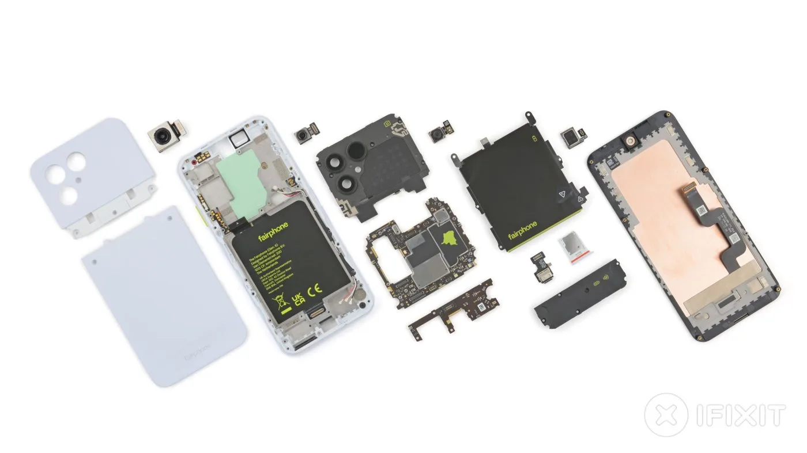
Un Fairphone desmuntat: bateria, pantalla, càmeres, placa i carcassa són peces independents que es poden substituir. Foto: iFixit.
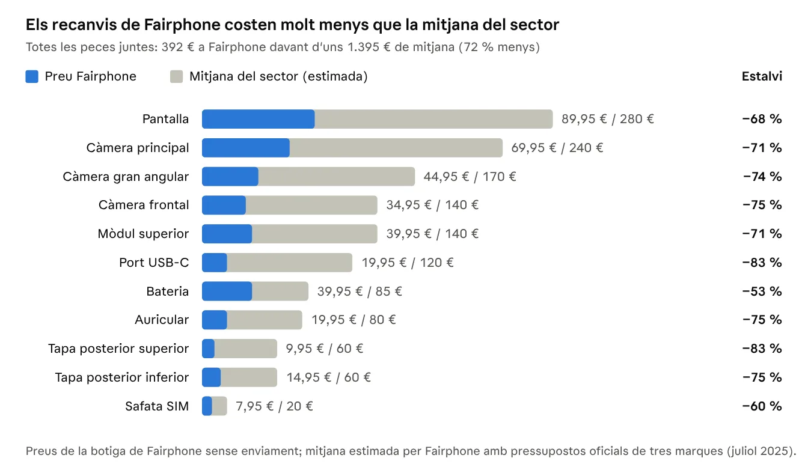
Font: botiga web de Fairphone, comparativa de recanvis (juliol 2025)
Un recanvi barat i fàcil de posar fa que reparar surti a compte, i això allarga la vida del mòbil. Compte, però: la mitjana del sector l'ha calculada la mateixa empresa, i per tant cal llegir-la com un argument comercial.
Per pensar: el cas de Microsoft mostra que un objectiu ambiciós no basta. Cal mesurar (abast 3), informar amb transparència i revisar l'estratègia.
8.3 Resum del tema
El desenvolupament sostenible té tres dimensions: ambiental, social i econòmica (Brundtland, 1987).
Els grans acords són l'Agenda 2030 (17 ODS) i l'Acord de París (ben per sota de 2 °C, esforços per 1,5 °C).
A l'empresa s'avalua amb els criteris ASG: ambiental, social i governança.
Els grups d'interès es prioritzen amb la matriu poder-interès i la doble materialitat.
Es rendeix comptes amb estàndards com GRI, ESRS i la CSRD, i amb indicadors com la petjada de carboni.
La ISR orienta les inversions amb criteris ASG; agències i índexs avaluen les empreses.
8.4 Glossari
Terme
Definició
ASG / ESG
Criteris ambientals, socials i de governança
Biocapacitat
Capacitat d'un territori de regenerar recursos i absorbir residus
CSRD
Directiva europea d'informació corporativa de sostenibilitat
Compromisos climàtics de cada país dins l'Acord de París
ODS
Objectius de Desenvolupament Sostenible
PUE
Indicador d'eficiència energètica d'un centre de dades
RAEE
Residus d'aparells elèctrics i electrònics
Stakeholder
Grup d'interès
8.5 Bibliografia i fonts
Institut Obert de Catalunya (IOC). Sostenibilitat aplicada al sistema productiu, unitat 1. Autora: Sandra Toboso Chavero. Departament d'Educació.
García Navarro, J. J. i Navarro Álvarez Sánchez, A. (2024). Sostenibilidad aplicada al sistema productivo. ISBN 978-84-1134-934-5. Unitat 1, consultada com a bibliografia.
Gutiérrez, E. Apunts RA1 i lectures 1.1-1.5 (Institut Milà i Fontanals).
Departament d'Educació. Presentacions del curs de formació del professorat sobre sostenibilitat (Odissea).
Elaboració: Eduard Gutiérrez, a partir dels materials IOC del mòdul 1708 (unitat 1) i la bibliografia de l’apartat 8.5.
M1708 · Sostenibilitat
Pràctiques RA1
Cinc pràctiques breus de reflexió i recerca. Formen el 20 % de la nota del RA1 (T1).
Totes són obligatòries i individuals. Lliura-les a Moodle en PDF, amb el teu nom.
Pots buscar a internet, als apunts, a la presentació i a l’IOC, i citar d’on ho treus. No pots lliurar un text fet amb IA sense elaborar-lo tu, ni copiar d’un company. Respon amb les teves paraules i amb exemples propis.
L’ús irracional dels recursos ens ha portat a una emergència ambiental, originada per la crisi climàtica i la crisi de la biodiversitat. Repassa les principals amenaces: canvi climàtic, desforestació, esgotament del sòl, pèrdua de biodiversitat, canvis als oceans, contaminació i plàstics (apunts, apartat 2).
Què has de fer
Quina d’aquestes amenaces creus que és més present? Justifica-ho.
Què és el que l’està causant?
Creus que hi ha alguna cosa que puguis fer per reduir aquesta amenaça?
Com es valora
Apartat
Punts
Tria i justificació de l’amenaça
3
Causes
3
Accions per reduir-la
3
Redacció
1
Criteris 1.a · 1.3
1.2 La naturalesa esgotada
La biodiversitat s’està reduint a un ritme alarmant. La biocapacitat mesura els recursos que el planeta pot oferir cada any; quan la superem, arriba abans el dia de la sobrecapacitat de la Terra. El 2020, l’any de la pandèmia, aquesta data es va endarrerir.
Què has de fer
Investiga. A Espanya hi ha espècies animals amenaçades. Quantes i quines són? Quines en són les causes?
Reflexiona. Quins hàbits del teu mode de vida i de consum poden estar avançant el límit de la biocapacitat? Relaciona-ho amb el que va passar el 2020 i proposa canvis concrets.
Com es valora
Apartat
Punts
Hàbits propis concrets
3
Relació amb la biocapacitat i el cas del 2020
2
Propostes i reflexió personal
3
Redacció
1
Investiga: espècies amenaçades
1
Criteris 1.a · 1.e
1.3 Deixant petjada
La petjada ecològica indica quants recursos naturals utilitzem; la biocapacitat, quants en tenim. També parlem de petjada de carboni, hídrica i plàstica (apunts, apartat 2.4 i 6.2).
Què has de fer
Proposta 1. Investiga la Guia dels ganduls per salvar el món de les Nacions Unides i explica les mesures que consideris més importants en els 4 nivells.
Proposta 2. Calcula la teva petjada de carboni i la teva petjada hídrica amb el teu estil de vida i la teva activitat quotidiana. Indica la calculadora que has fet servir i els resultats.
Com es valora
Apartat
Punts
Proposta 1: mesures dels 4 nivells
4
Petjada de carboni calculada o estimada
2
Petjada hídrica calculada o estimada
2
Reflexió
1
Redacció
1
Criteris 1.a · 1.3
1.4 L’emergència social
L’emergència ambiental també afecta les persones: agreuja la pobresa, la fam, els conflictes i les migracions. Les persones i els països amb menys recursos són els més amenaçats, perquè tenen menys capacitat d’adaptar-se.
Què has de fer
Investiga. Respecte a les persones immigrants que arriben a Espanya en pastera, per què surten del seu país? De quins països venen?
Investiga. Lagos podria quedar inhabitable pel canvi climàtic. Per què?
Investiga. Quins són els països més vulnerables al canvi climàtic? Quins són els més preparats?
Investiga. Busca algun element de l’emergència ambiental i explica quin impacte suposa. Per exemple, la sequera fa que les fruites i les verdures siguin més cares.
Com es valora
Apartat
Punts
Pastera
2
Lagos
2
Països vulnerables i preparats
2,5
Element ambiental i impacte
2,5
Redacció
1
Criteris 1.b · 1.d
1.5 La desigualtat social, un flagell implacable
La desigualtat social apareix quan una persona o un grup rep un tracte diferent per motius econòmics, educatius, de gènere o culturals. L’Agenda 2030 la combat amb el lema No deixar ningú enrere.
Què has de fer
1.5.1 Investiga. La bretxa digital és un dels problemes del desenvolupament d’alguns països. És certa aquesta afirmació? Per què?
1.5.2 Resol. Analitza el teu entorn més proper (comunitat, barri o poble), localitza-hi algun element que suposi una situació de desigualtat social, explica’l i busca-hi una solució viable.
Com es valora
Apartat
Punts
1.5.1 Bretxa digital: afirmació i justificació
4
1.5.2 Problema de desigualtat de l’entorn
3
1.5.2 Solució viable
2
Redacció
1
M1708 · Sostenibilitat
Prova escrita RA1
La prova escrita (Q1) val el 80 % de la nota del RA1 i cal treure-hi un 5 o més per aprovar el RA.
Què hi entra
Bloc
Has de saber…
Apunts
Sostenibilitat i marcs
Definir el desenvolupament sostenible, les tres dimensions i les fites (Brundtland, Rio, Kyoto, Pacte Mundial, París, Pacte Verd).
Practica classificant exemples reals d’empreses informàtiques amb els criteris ASG.
M1708 · Sostenibilitat
RA1 · Criteris i continguts
Identifica els aspectes ambientals, socials i de governança (ASG) relatius a la sostenibilitat tenint en compte el concepte de desenvolupament sostenible i els marcs internacionals que contribueixen a la seva consecució.
Criteris d’avaluació
1.a Descriu el concepte de sostenibilitat, establint els marcs internacionals associats al desenvolupament sostenible.
1.b Identifica els assumptes ambientals, socials i de governança que influeixen en el desenvolupament sostenible de les organitzacions empresarials.
1.c Relaciona els Objectius de Desenvolupament Sostenible (ODS) amb la seva importància per a la consecució de l'Agenda 2030.
1.d Analitza la importància d'identificar els aspectes ASG més rellevants per als grups d'interès de les organitzacions relacionant-los amb els riscos i oportunitats que suposen per a la pròpia organització.
1.e Identifica els principals estàndards de mètriques per a l'avaluació de l'acompliment en sostenibilitat i el seu paper en la rendició de comptes que marca la legislació vigent i les futures regulacions en desenvolupament.
1.f Descriu la inversió socialment responsable i el paper dels analistes, inversores, agències i índexs de sostenibilitat en el foment de la sostenibilitat.
Continguts
1. Fonaments de la sostenibilitat i desafiaments globals
1.1 Definició i evolució del concepte de sostenibilitat.
1.2 Revisió del marc normatiu i regulador en sostenibilitat a nivell local i internacional. Anàlisi de mètriques.
1.3 Canvi climàtic, protecció dels ecosistemes, equitat social.
1.4 Marc universal i els Objectius de Desenvolupament Sostenible (ODS) dins de l'Agenda 2030.
1.5 Concepte i aplicació de la gestió ASG.
Instruments i pes
Instrument
Què és
Pes
Q1 · Prova escrita
Prova individual de tot el RA1.
80 %
T1 · Pràctiques
Mitjana de les pràctiques i exercicis del RA1. Totes són obligatòries.
20 %
Per aprovar el RA1 cal un 5 o més a la prova escrita i haver lliurat totes les tasques. Si en falta alguna, la nota màxima del RA és un 4.